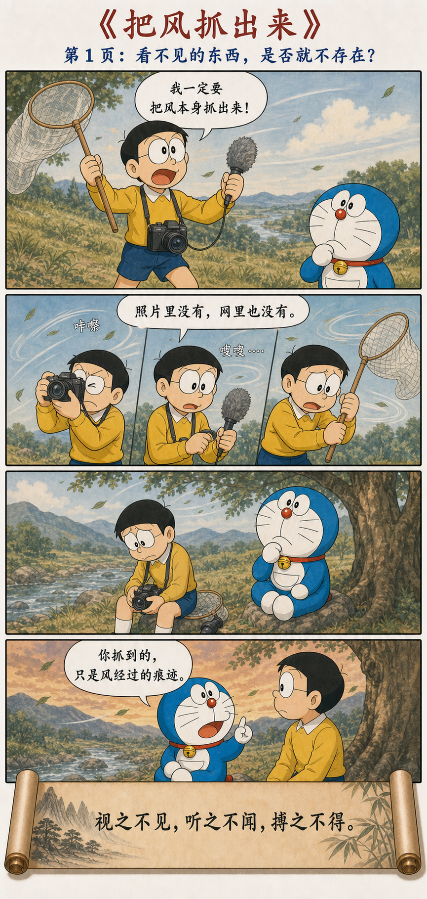
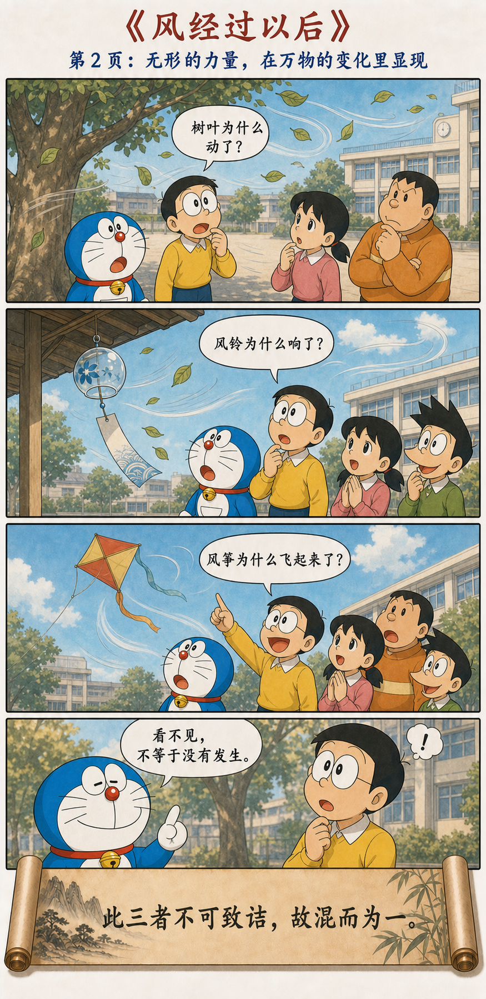
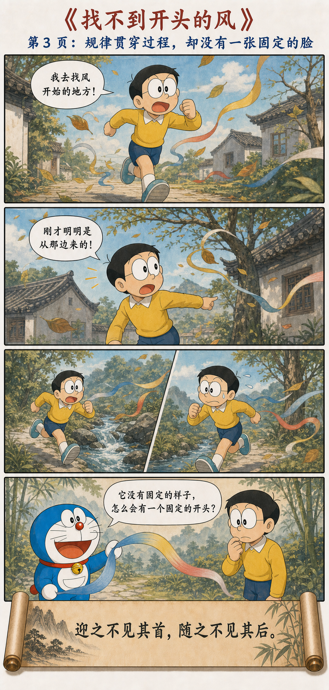
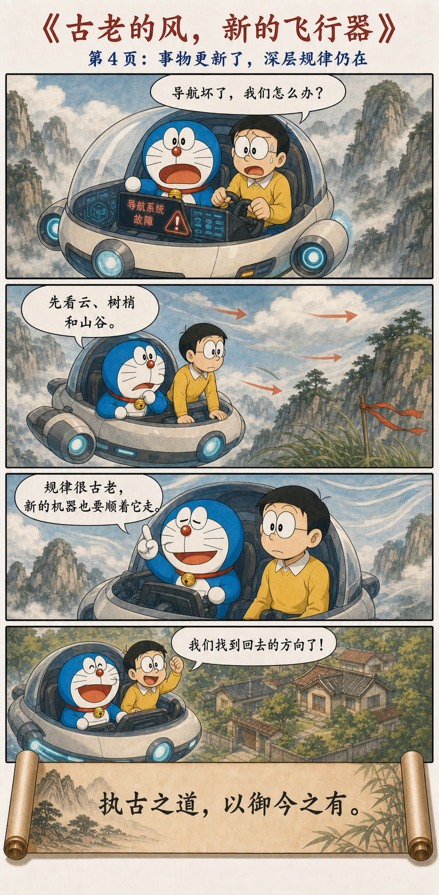

无状之状，无物之象
视之不见，名曰夷；听之不闻，名曰希；搏之不得，名曰微。此三者不可致诘，故混而为一。其上不皦，其下不昧。绳绳不可名，复归于无物。是谓无状之状，无物之象，是谓惚恍。迎之不见其首，随之不见其后。执古之道，以御今之有。能知古始，是谓道纪。
道不是摆在眼前的一件东西
想看它，却看不见清楚的形状；想听它，却听不到固定的声音；伸手去抓，也抓不到一个实体。视觉、听觉和触觉都无法把它完整地变成对象，只能把这三种不可捉摸合在一起理解。
它没有明亮的顶端，也没有昏暗的底部；连绵运行，却不能被一个名字框住。迎上去看不见开头，跟在后面也看不见终点。可是，人仍可以把握古老而深层的规律，处理今天不断出现的新事物。
从“抓住风”，到“看见风经过”




“不可见”不是“不存在”
大雄的问题，是坚持把风当成一个可以从世界里单独取出的物件。相机能拍到树叶，麦克风能录到气流经过物体的声音，网能拦住被风带动的东西，却没有一种工具能把“风本身”像石头一样放到桌上。
但这并不说明风不存在。叶子改变方向、风铃发生振动、风筝获得升力，都是它留下的关系和结果。第十四章提醒我们：不是所有真实都以独立物体的方式出现，有些真实只在事物相互作用时显现。
不要只问“它是什么样子”，也要问“它让什么发生了变化”。
道更像规律，而不是隐藏的神秘物质
漫画借风作比喻，但风并不等于道。风仍然是能够测量速度、方向与压力的自然现象；道则指向事物得以发生、转化并彼此关联的更深秩序。这个比喻只想说明：无法直接看见一个实体，不等于无法从结果中理解它。
因此，“惚恍”不是鼓励含糊，也不是让人相信某种看不见的神秘能量。它是在限制我们的自信：任何一个固定形象、单一名字或局部模型，都不足以穷尽那套不断生成万物的关系。
我们总想找一个起点，世界却常是连续的
风绕过山谷、屋檐和树木，方向不断改变。你沿着彩带追过去，会发现每个“开始”前面还有条件，每个“结束”又成为下一段变化的开端。道不是一条可以指着说“从这里才开始”的线。
现实问题也常如此。一次冲突未必始于最后那句重话，一项成果也未必始于最后一次努力。只盯住一个可见节点，就会把漫长的关系、积累与反馈遗漏掉。
不是复古，而是用深层规律理解新事物
“执古之道，以御今之有”不是要求复制古代生活。飞行器、算法和组织形式都会更新，但它们仍受制于因果、约束、反馈、资源和人的需要。越新的工具，越需要问清它顺着什么规律、改变了什么关系。
从痕迹进入规律
第十四章不是要人放弃认识，而是改变认识的方式：当一个东西无法被直接抓住时，不要急着说它没有，也不要急着把想象当成答案。观察它怎样改变万物、怎样贯穿过程，再用经得起检验的规律处理当下。
看不见它的脸，仍可以看见它走过的路。